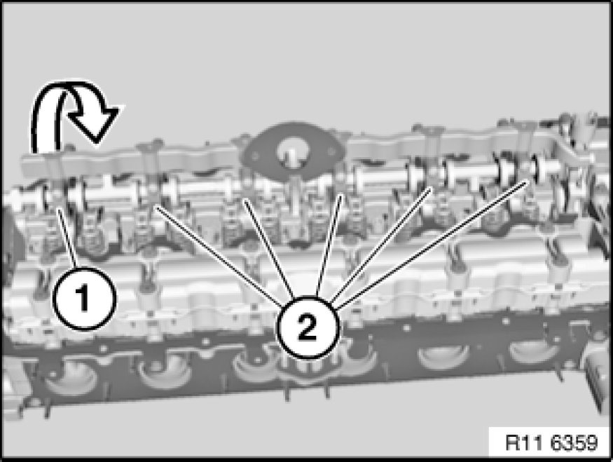
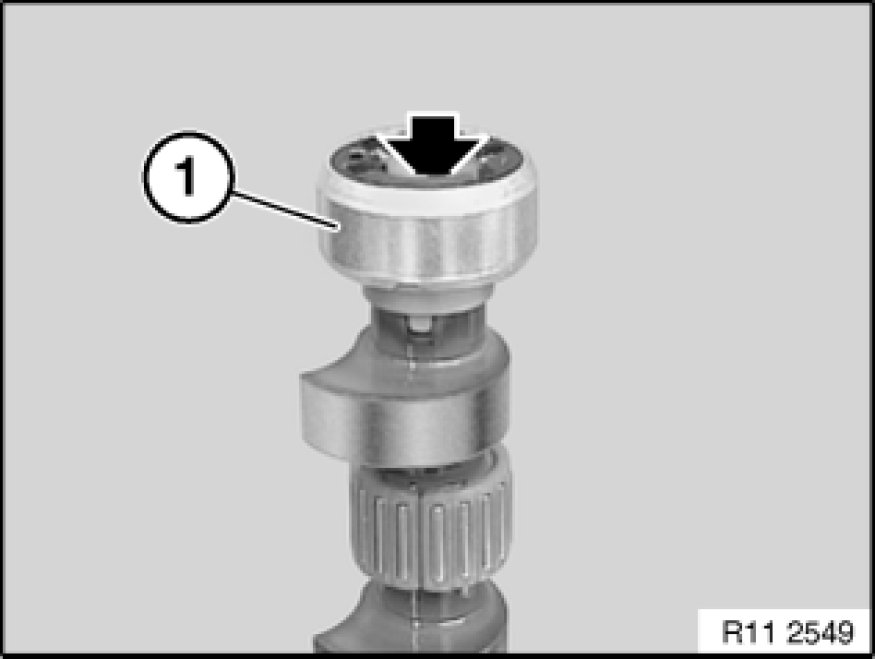
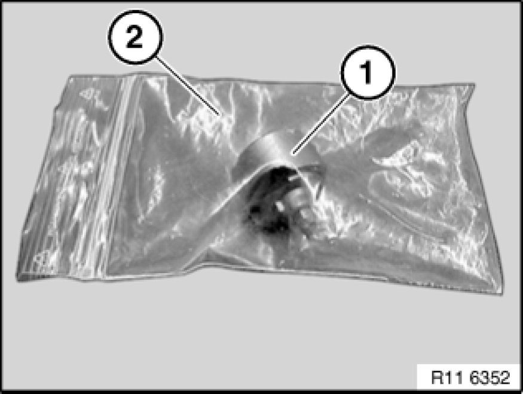
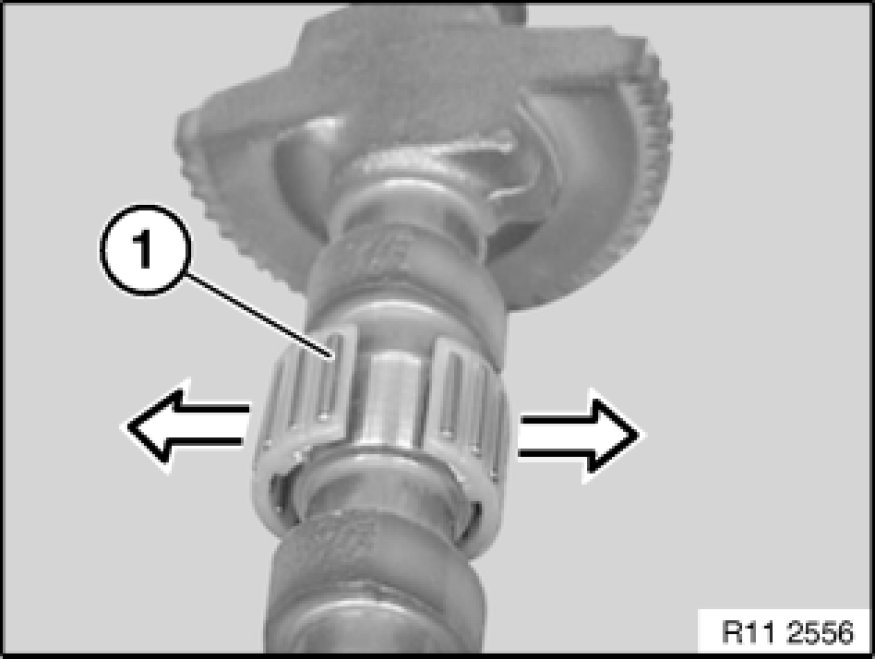
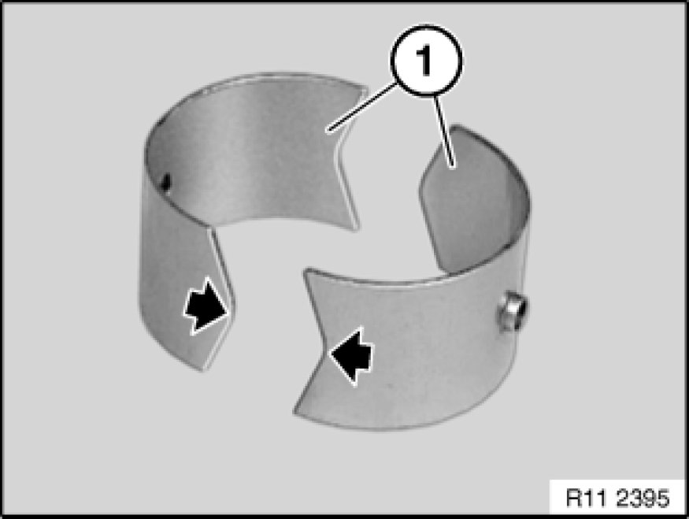
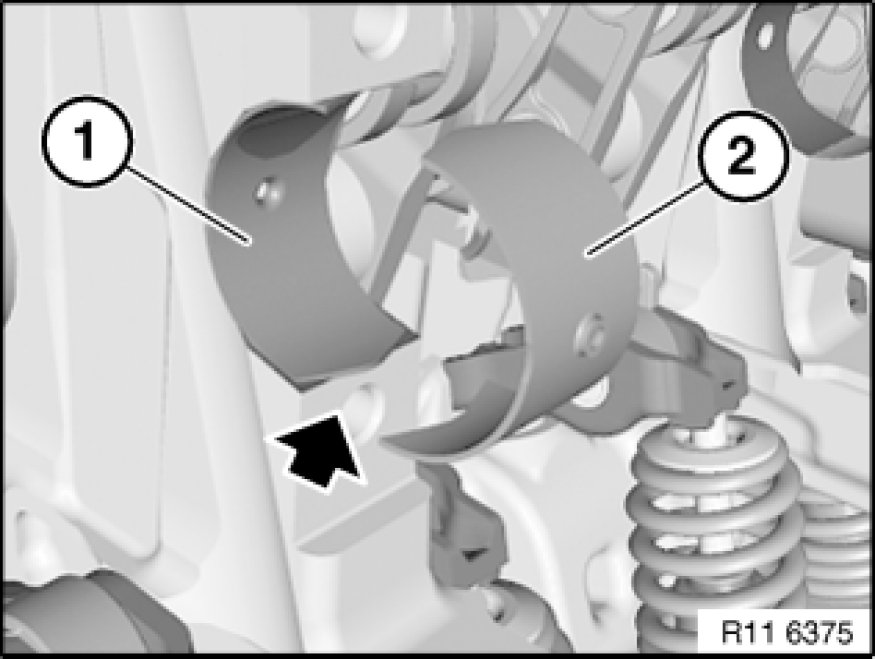

Removing and Installing/Replacing Eccentric Shaft (N52K)
11 37 005 - Removing and installing/replacing eccentric shaft (N52K)

Special tools required:
- 11 4 481 11 4 480 Placement Boards (2 X)

Necessary preliminary tasks:
- Remove cylinder head cover Service and Repair
- Remove intermediate lever Removing and Installing/Replacing Intermediate Levers (N52K)

If necessary, move eccentric shaft (1) on twin surface to minimum lift (2).

Note:
All bearing caps (1 and 2) of eccentric shaft are marked with numbers from 1 to 6 (1 for 1st cylinder to 6 for 6th cylinder).
Bearing cap 6 (1) is provided with a stop.
Release screws on bearing cap 6 (1).
Release screws on bearing caps 1 to 5 (2).
Set all bearing caps down in special tool 11 4 481 11 4 480 Placement Boards (2 X) in a tidy and orderly fashion.
Remove eccentric shaft with gentle tilting and turning movements.

Important!
Screw is not magnetic and must be secured against falling down.
Release screw.
Remove magnet wheel (1).

Important!
Magnet wheel (1) is highly magnetic and must be protected against metal filings/borings.
After removing, place magnet wheel (1) in a plastic bag (2) with a seal.

Important!
Needle bearing (1) can break very easily.
Carefully pull needle bearing (1) apart at point of separation.
Remove all needle bearings (1) from eccentric shaft.

Install bearing shells (1) as pictured.
Note:
Always replace bearing shells (1) and needle bearings together.

Install bearing shell (1) with tip facing down (see arrow) in cylinder head.
Install bearing shell (2) with tip facing up in bearing cap.
Note:
All bearing caps (1 and 2) of eccentric shaft are marked with numbers from 1 to 6 (1 for 1st cylinder to 6 for 6th cylinder).
Bearing cap 6 (1) is provided with a stop.
Insert eccentric shaft.
Adjust eccentric shaft on dihedron to minimum stroke.
Fit all bearing caps (1 and 2).
Insert all screws.
Tightening torque 11 12 7AZ [1][2]11 12 Cylinder Head with Cover.

Assemble engine.